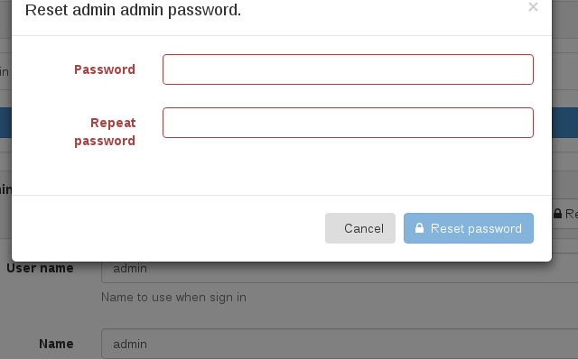
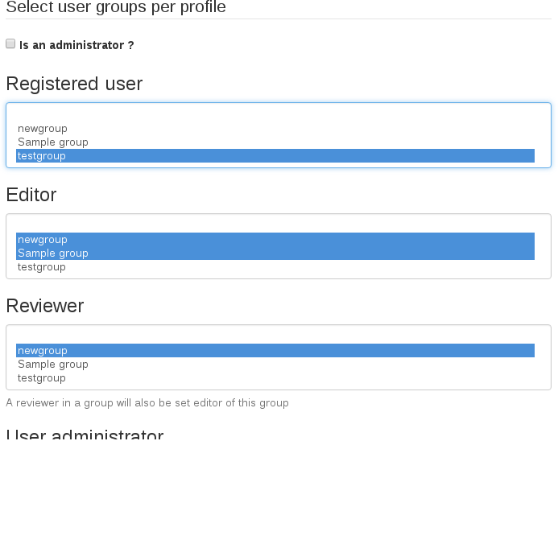

Усталяваць¶
Змяніць пароль адміністратара¶
Першы крок, які вы павінны зрабіць пасля разгортвання GeoNetwork, - гэта ўвайсці ў сістэму з правам адміністратара і змяніць пароль адміністратара. Адміністратар па змаўчанні называецца admin, а пароль admin. Пасля таго, як вы ўвайшлі ў сістэму, вы павінны ўвайсці ў кансоль адміністравання, каб наладзіць асноўныя параметры.
Зменіце пароль адміністратара тут:
http://localhost:8080/geonetwork/srv/eng/admin.console#/organization/users?userOrGroup=admin
Асноўныя налады¶
Затым перайдзіце на старонку налад:
http://localhost:8080/geonetwork/srv/eng/admin.console#/settings
Тут ёсць некалькі значэнняў канфігурацыі, якія трэба змяніць, як дамен URL для вашага каталога, калі ён збіраецца выкарыстоўваць https або назву для вашага каталога.

Пераканайцеся, што вы выкарыстоўваеце імя хаста, порт і пратакол, якія вашы карыстальнікі будуць выкарыстоўваць для доступу да геапарталу, бо гэтыя налады будуць выкарыстоўвацца для генерацыі URL-адрасоў па змаўчанні, такіх як паказаныя на карце сайта.
Пераважным пратаколам павінен быць https, бо гэта будзе азначаць бяспечную навігацыю для вашых карыстальнікаў, але HTTP з'яўляецца пратаколам па змаўчанні для лёгкага разгортвання і распрацоўкі. Уваход не павінен ажыццяўляцца па-за пратаколам https з меркаванняў бяспекі. Выкарыстанне пратаколу https у строгай палітыцы браўзера, як у Firefox, можа азначаць, што некаторыя сэрвісы карт http будуць заблакіраваны і пры спробе загрузкі на карту вывесці памылку. Гэта можна вырашыць, выкарыстоўваючы толькі сэрвісы карт https. Паколькі http з'яўляецца састарэлым пратаколам, гэтая праблема з часам будзе вырашана. Пракансультуйцеся з вашым пастаўшчыком картаграфічных паслуг, каб выкарыстоўваць https з сапраўдным сертыфікатам для картаграфічных службаў.

Ідэнтыфікатар каталога павінен быць унікальным імем ва ўсім Інтэрнэце. Ідэнтыфікатар па змаўчанні ствараецца GeoNetwork аўтаматычна і павінен быць бяспечным у выкарыстанні. Калі ў вас няма лепшага ідэнтыфікатара, вы можаце пакінуць той, які ствараецца па змаўчанні.
Загрузка схем¶
Апошняе важнае, што трэба наладзіць, - гэта тое, якія схемы мы будзем выкарыстоўваць у нашым каталогу. Па змаўчанні GeoNetwork ужо ўсталявала некаторыя найбольш часта выкарыстоўваюцца схемы. Гэтыя схемы звычайна маюць узоры і шаблоны, якія вы можаце лёгка дадаць у свой каталог на кансолі адміністравання:
http://localhost:8080/geonetwork/srv/eng/admin.console#/метададзеныя

Узоры дадзеных не прымяняюцца ў рэальных каталогах, яны проста выкарыстоўваюцца, каб паказаць, як трэба запаўняць метададзеныя і як яны будуць выглядаць пасля ўстаўкі дадзеных у каталог.
З іншага боку, шаблоны патрэбныя, калі вы хочаце рэдагаваць метададзеныя. Замест выкарыстання пустых xml-файлаў для стварэння метададзеных пры стварэнні новага запісу выкарыстоўваецца шаблон. Вы заўсёды можаце імпартаваць або сабраць ужо створаныя метаданыя замест выкарыстання рэдактара для ручнога стварэння запісаў, калі гэта адпавядае вашаму выпадку выкарыстання.
Калі вы дадасце некалькі шаблонаў, ваш каталог гатовы да выкарыстання.
Стварэнне карыстальнікаў¶
Нягледзячы на тое, што вы можаце ўключыць самарэгістрацыю карыстальнікаў, больш звычайна ствараць карыстальнікаў уручную, так што вы дакладна кантралюеце, хто да чаго мае доступ. У каталогу выкарыстоўваецца канцэпцыя карыстальнікаў, груп і профіляў карыстальнікаў.
Карыстальнік можа быць часткай адной або некалькіх груп.
Карыстальнік мае ролю ў групе.
Роля адміністратара не звязана з групай, а з усёй платформай.
Карыстальнікі могуць мець розныя ролі ў розных групах. Роля вызначае, якія задачы можа выконваць карыстальнік:
Госць - гэта карыстальнік, які можа бачыць запісы ў групе, але не можа іх змяняць.
Рэдактар - гэта карыстальнік, які можа ствараць або рэдагаваць запісы ў групе.
Рэцэнзент - гэта карыстальнік, які можа рэдагаваць і публікаваць запісы ў групе.
UserAdmin - гэта карыстальнік, які мае адміністрацыйныя прывілеі над запісамі і карыстальнікамі ў групе.
Каб дадаць новага карыстальніка ў сістэму GeoNetwork, вы зробіце наступнае:
Выберыце ў меню кнопку «Адміністраванне».
На старонцы адміністравання абярыце Кіраванне карыстальнікамі
Націсніце кнопку Дадаць новага карыстальніка
Дайце інфармацыю, неабходную для новага карыстальніка
Прызначце правільны профіль
Прывязаць карыстальніка да групы
Націсніце на Захаваць

Для кожнай магчымай ролі ёсць спіс груп. Такім чынам, карыстальнік можа мець розныя ролі для розных груп, дазваляючы карыстальніку быць госцем толькі для чытання ў адной групе, маючы магчымасць рэдагаваць і праглядаць запісы ў іншай групе.
Стварэнне груп¶
Каб ствараць новыя групы, вы павінны ўвайсці ў сістэму з уліковым запісам з правамі адміністратара.
Выберыце ў меню кнопку «Адміністраванне». На старонцы адміністравання абярыце Кіраванне групамі.
Абярыце Дадаць новую групу. Вы можаце выдаліць групу ўзораў;
Запоўніце дэталі. Адрас электроннай пошты будзе выкарыстоўвацца для адпраўкі водгукаў аб спампоўках даных, калі яны адбываюцца для рэсурсаў, якія ўваходзяць у групу.
Націсніце на Захаваць
Прывілеі доступу могуць быць устаноўлены для запісу метададзеных. Вы можаце вызначыць прывілеі для кожнай групы.
Глядзіце больш на Канфігурацыя каталога.